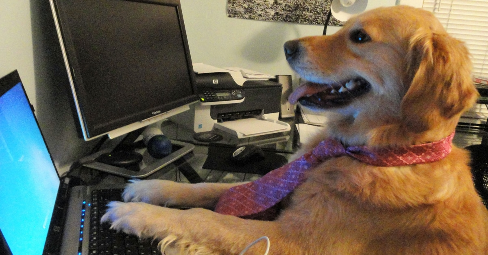

Today we had the introduction for FrontEnd Development at Sundsgården.
I am super excited! It took a lot less time than anticipated so I had
the chance to call CSN regarding paperwork and catch up on coursework
from Textilhögskolan.
Mom picked up Lo so I had a couple of hours to finish a few quizes and do some
planning. Everything feels better with a plan.
Had falafels and mashed potatoes for dinner. Surprisingly tasty
combination.
tuesday 18jan22
I had a really long day. Just a really long day. Had the laundry
room booked and it was my turn to drop Lo off at daycare.
Went home and finished a few assignments for the courses at
Textilhögskolan. I dropped Lo at her grandma after daycare
and went to the dentist and had him steal all of my money fix
my cavaties. He was very nice and polished of my coffe stains FOC
while waiting for the anesthesia to kick in.
Ate pasta with zucchini, tomates and sallad. Lo only wanted to eat the
tomatoes and parmesan. I couldn't feel half of my mouth so it was a
gamble to try to chew (I'm very brave ok).
wednesday 19jan22
Hardly slept due to a child that did not sleep, so that was ""fun"". Work
today - 8 days in a row then I get a couple of days off. I have less
than 2 weeks left now. I'm gonna miss my colleagues and the chat and
the Fika Fridays. I'm also gonna miss that joke of a program, Amadeus.
I actually feel kinda sad that I don't get a chance to work more
with Amadeus and to properly learn it. But not gonna lie, will not miss the fear of
hitting ER instead of RT. I don't know what they were thinking when
they put the save command next to the retrieve command when nothing is
reversible. There is no ctrl+z in the flight booking
business.
Tried to understand Git but I didn't. Gonna have to google Git for
dummies. The video below is an accurate depiction of me following along
in the git tutorials. Made myself a Github profile and played around with some HTML which was fun!
Made tacos for dinner. Lo only wanted to eat the tomatoes, corn and
cheese. Zo wanted to eat everything but since she is a dog she was
not allowed.
thursday 20jan22
Work today as well. Hardly any calls are coming in, so I can study
and write my little journal and try some fun html stuff. Notice my
pretty little font-y things!. Gonna need to write a whole-ass
assignment for Textilhögskolan today so I can cash in a few points.
I am trying very hard to lower my standard a bit, stop being a
perfectionist and just write something - anything. Still waiting for
documentation to arrive so I can convince CSN to give me money again.
I'm trying to learn more about html, reading up on the basics and
bookmarking pages that seem like helpful resources.
No one told me that 90% of parenting is deciding what everyone in
the family will be eating and then preparing and making it. With
that said, I have no idea what I'm cooking tonight.
friday 21jan22
So the kid is sick and the sambo is sick and I am super healthy
and super tired. Sent in assignment 1 to Textilhögskolan last night. Did not
expect CSN to deny my application so I'm really hoping for a
passing grade to make up for points missed. Worst case scenario at the
moment is a couple of months without CSN and that is absolutely doable! Obviously
I'm hoping they'll accept my appeal, but you never know.
But let's skip to the good part: coding is fun! I've spent all my free
time googling and watching youtube videos about git and html. I am kind
of understanding git and I managed to do the inital commit, and the project
is on github now. Need to add the changes I am making right now (that is,
just me rambling on about irrelevant stuff).
Rak thai has closed so I bought us falafels. It's been a falafelly week.
saturday 22jan22
It's been a long week and it is not over yet. A few hours of work left.
The rest of the family is still sick. Sent in assignment 2 for circular
fashion so now I'm all done with that course. I have 2 days off
from work next week (my very last days off - okay, I'm feeling a bit
sentimental about leaving this crap job) and should have time to hand
in the final report in Innovative textiles so I can focus 100% on
becoming a front end developer (AAAHH!!). I am really, REALLY excited about all
of the learning over the next few months and - hopefully - starting
a new career! I'm really happy about how supportive my brother has been regarding
my career change! Since he knows a bunch of these stuff, it feels nice to know that
he thinks I can do it to.
I got an error when saving my changes due to index.html was a read
only file. Got the option to overwrite so I did. I am now wondering if
it had something to do with git. Gonna go look in to that now.
Update: yeah, it probably was git related since I was changing the
master. I think. Created a couple of branches and did a pull request
and now I'm feeling like yeeeees I got this, but at the same time I'm
feeling like the meme with the dog working on his computer.

Making pizza tonight.
sunday 23jan22
I did absolutely nothing of value on Sunday, which I suppose was extremely
valuable for my general well-being. I think I took three calls during my shift
today and the rest of the time was spent chatting with my colleagues and watching
parks and recreation.
We made tomatoes, zucchini and beans in the oven, mashed it with the potato masher,
added oatly iMat and a ton - a literal ton - of parmesan. Served with pasta.
monday 24jan22
We got the new assignments and videos about CSS today! I am excited about colors!
I'm just gonna do a bunch of pink I think. I wanna try and do a sidebar of somekind
with little links to my entries. Gonna see if I can sort that out even though we
haven't covered it yet. The list part should be fine, but I want a lil box on the
right.
Potatoes and beet sallad was on the menu. Get paid tomorrow so I splurged on quorn filets
and lösgodis. That was a really good idea, a big thank you to me.
tuesday 25jan22
So it's pink alright! And also a pinker header and footer. What I can't do
is to get the sidebar working like I want. Well, the sidebar is a lil sidebar, but
it covers the text in the body/main. Will ask my teacher what I'm getting wrong
when I send in the assignment. Will take it out from my code since it is messing
things up. I'll try and let it go for now and instead focus on adding links to my sidenav
(but knowing myself I'll probably be back at it tonight).
What I'm gonna eat tonight? Good question. I would like to just have a lösgodis dinner
but I have to be responsible and feed my child actual food.
wednesday 26jan22
It's Friday today (Friday on a Wednesday that is, got 2 days off). Gonna
finish the assignment in Innovative Textiles over my "weekend". I picked up the
documentation that CSN has asked for and will send it tomorrow. Fingers crossed
they will accept my reasons for not finishing up my last semester.
Watched all our lessons again, finishing up with the videos from Lesson 3. Made new and
better notes - I love studying. Tomorrow evening I'm going to try to make a box or
two. Maybe I can get the fixed footer to work like I wanted! Also on my list is to add
paragraphs to my article and add paddings and margins. Remove all of the BRs. On Friday
I'll start a new project with pictures of my dog. Just a website dedicated to my dog. It's
gonna be great.
Made pasta and balls.
thursday 27jan22
Came up with an idea for my Innovation Project report and finished the
whole report. Don't know how good it is, but hopefully I will get a passing grade.
I wrote about compostable socks. That was my innovative idea. Make socks from corn that you can
put in the compost bin. I just need to send the papers to CSN and then I'm done everything
else and focus on fun stuff! I.e. studying!
Ate pasta with beets and feta.
friday 28jan22
I got the day off work today as well so I can keep working on the css boxes and
catch up on some reading. I am trying to do a fixed navigation sidebar but it is
not doing what I want. I can't get the other content to line up - it just
ends up underneath. I'm gonna let it go for a bit and see if I can work on
the fixed footer instead.
I tried the color palette and gradient generators and changed the colors up
a bit. Gonna add a few classes so I can get diffent articles in different
colors. Update: Went a bit bananas with the colors but I like it. Also
fixed the issues with the links in the menu and thanks to my classmates in the
discord chat I sorted out the fixed sidebar. Still on the todos is read and
fix the footer.
Update on the CSN situation - 12,5 out of 15 points from Textilhögskolan
are added to Ladok. One assignment from Cirkulär Textil is not graded yet but
should not be an issue. Still no reply from CSN regarding my appeal but fingers
are crossed and thumbs are held.
saturday 29jan22
I'm very proud of my little diary project! I managed to create a button (but it
stays hidden for now). Gonna try to make a new project this evening with photos
of Zo. At the moment I'm working from my home office, but hardly any calls are coming in so
I'm doing a bit of reading and re-watching the videos.
I've been looking for information about possible career paths when the course is
over and have found a few trainee programs that seem interesting. Could be a good
way to get some work experience and deeper knowledge. Before starting this course I applied
for a bootcamp position at Stratiteq but didn't get it. I'll contact them again in a
couple of months when I've got a portfolio and a few projects to point to.
I've been trying to find out if there are any groups or networks of women in tech
or women in programming around Helsingborg.